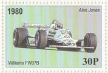
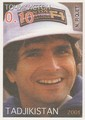
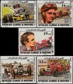
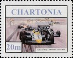
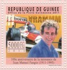
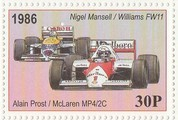
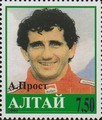

Formula 1 Seasons
Below is a list of all of the Formula 1 seasons in the decade; click on a year to see the cars and drivers featured on stamps for that specific Formula 1 season. Also listed are any specific events for the season featured on stamps in my collection and/or any stamps that feature the season in question. Click on an event or a championship winning driver name to see the stamps featuring that particular event or driver.
Below is a list of all of the Formula 1 seasons in the decade; click on a year to see the cars and drivers featured on stamps for that specific Formula 1 season. Also listed are any specific events for the season featured on stamps in my collection and/or any stamps that feature the season in question. Click on an event or a championship winning driver name to see the stamps featuring that particular event or driver.
1980
Safety concerns at the Buenos Aires and Interlagos circuits almost caused the first two races of the season to be abandoned. Then a dispute between FISA and FOCA almost caused the third race of the season to be boycotted. The Spanish Grand Prix was then a non-championship race, as due to the on-going dispute it was not held under FISA regulations. A number of accidents occurred this season, resulting in the death of one driver and serious injury to a number of others. The Ford-Cosworth DFV 3.0 V8 continued to be the dominant engine; it was used by all teams except Ferrari, Alfa Romeo and Renault.
Safety concerns at the Buenos Aires and Interlagos circuits almost caused the first two races of the season to be abandoned. Then a dispute between FISA and FOCA almost caused the third race of the season to be boycotted. The Spanish Grand Prix was then a non-championship race, as due to the on-going dispute it was not held under FISA regulations. A number of accidents occurred this season, resulting in the death of one driver and serious injury to a number of others. The Ford-Cosworth DFV 3.0 V8 continued to be the dominant engine; it was used by all teams except Ferrari, Alfa Romeo and Renault.
Constructor Title: Williams |
Driver Title: Alan Jones  |
Charity Souvenir Stamp featuring the 1980 F1 Season |
1981
San Marino featured on the Formula 1 calendar for the very first time. Alain Prost won his first race - his home Grand Prix in France driving for Renault. The final race of the season was originally due to be held at Watkins Glen, but this track was dropped from the calendar due to the circuit's financial difficulties and the race was held at Caesars Palace instead. Also, the South African Grand Prix at Kyalami was run as a non-championship race because of the ongoing FOCA-FISA dispute; the race was contested only by the Ford-Cosworth powered teams all running cars that had aerodynamic devices which were banned for the 1981 championship season.
San Marino featured on the Formula 1 calendar for the very first time. Alain Prost won his first race - his home Grand Prix in France driving for Renault. The final race of the season was originally due to be held at Watkins Glen, but this track was dropped from the calendar due to the circuit's financial difficulties and the race was held at Caesars Palace instead. Also, the South African Grand Prix at Kyalami was run as a non-championship race because of the ongoing FOCA-FISA dispute; the race was contested only by the Ford-Cosworth powered teams all running cars that had aerodynamic devices which were banned for the 1981 championship season.
Constructor Title: Williams |
Driver Title: Nelson Piquet  |
75th Anniversary of the French Grand Prix  |
75th Anniversary of the French Grand Prix |
75th Anniversary of the French Grand Prix |
75th Anniversary of the French Grand Prix |
75th Anniversary of the French Grand Prix |
75th Anniversary of the French Grand Prix |
75th Anniversary of the French Grand Prix |
Charity Souvenir Stamp featuring the 1981 F1 Season  |
1982
In 1982, eleven different drivers won a race, none of them more than twice. Keke Rosberg was the first driver since Mike Hawthorn in the 1958 season to win the championship after winning only one race The only season to host three Grand Prix in the same country (United States) - Caesars Palace Grand Prix, Detroit Grand Prix and United States Grand Prix West. There was a drivers strike at the first race. The on-going dispute between FISA and FOCA caused many teams to boycott the San Marino Grand Prix. This was all down to the sporting and technical regulations which prompted many complaints about safety. There were many serious accidents and two drivers were killed, Gilles Villeneuve being one.
In 1982, eleven different drivers won a race, none of them more than twice. Keke Rosberg was the first driver since Mike Hawthorn in the 1958 season to win the championship after winning only one race The only season to host three Grand Prix in the same country (United States) - Caesars Palace Grand Prix, Detroit Grand Prix and United States Grand Prix West. There was a drivers strike at the first race. The on-going dispute between FISA and FOCA caused many teams to boycott the San Marino Grand Prix. This was all down to the sporting and technical regulations which prompted many complaints about safety. There were many serious accidents and two drivers were killed, Gilles Villeneuve being one.
Constructor Title: Ferrari |
Driver Title: Keke Rosberg  |
Charity Souvenir Stamp featuring the 1982 F1 Season  |
1983
The last season in which a non-championship race was held - the Race of Champions at Brands Hatch, won by Keke Rosberg in a Williams. Nelson Piquet's driver's title was the first ever by a driver using a turbocharged engine. Lotus founder Colin Chapman died in December 1982, so this was the first season Lotus contested without their legendary leader. Lotus had a dismal season, retiring from most of the races.
The last season in which a non-championship race was held - the Race of Champions at Brands Hatch, won by Keke Rosberg in a Williams. Nelson Piquet's driver's title was the first ever by a driver using a turbocharged engine. Lotus founder Colin Chapman died in December 1982, so this was the first season Lotus contested without their legendary leader. Lotus had a dismal season, retiring from most of the races.
Constructor Title: Ferrari |
Driver Title: Nelson Piquet |
1983 San Marino Grand Prix  |
1983 Dutch Grand Prix |
Charity Souvenir Stamp featuring the 1983 F1 Season  |
1984
The main battle this season was between McLaren teammates Niki Lauda and Alain Prost. Prost joined McLaren after being sacked by Renault for failing to win the 1983 title. McLaren benefited from the new TAG turbo engine - FISA introduced new fuel economy rules aimed at reducing speeds, only 240 litres of fuel were available for the entire race. TAG commissioned Porsche to design and build a turbo engine as Porsche had relevant experience with similar rules in other disciplines. Nelson Piquet (the reigning champion) and his Brabham-BMW were usually the fastest combination on track, but poor reliability meant he could not challenge McLaren. The Tyrrell team had its results stripped after a technical infringement.
The main battle this season was between McLaren teammates Niki Lauda and Alain Prost. Prost joined McLaren after being sacked by Renault for failing to win the 1983 title. McLaren benefited from the new TAG turbo engine - FISA introduced new fuel economy rules aimed at reducing speeds, only 240 litres of fuel were available for the entire race. TAG commissioned Porsche to design and build a turbo engine as Porsche had relevant experience with similar rules in other disciplines. Nelson Piquet (the reigning champion) and his Brabham-BMW were usually the fastest combination on track, but poor reliability meant he could not challenge McLaren. The Tyrrell team had its results stripped after a technical infringement.
Constructor Title: McLaren |

1984 Grand Prix Season  |
1984 Grand Prix Season |
1984 Grand Prix Season  |
1984 Grand Prix Season  |
1984 Grand Prix Season  |
Charity Souvenir Stamp featuring the 1984 F1 Season  |
1985
Widely considered to be one of the best and most exciting seasons of all time. Ayrton Senna and Nigel Mansell scored their first wins in 1985. The Australian Grand Prix was added to the championship. This was last season to include the Dutch Grand Prix, to race at the original Kyalami circuit (South Africa) and the full Paul Ricard circuit. 1985 was also the last season in which the European Grand Prix was held at Brands Hatch. The universal use of 1.5 litre turbocharged engines meant the end of the naturally aspirated Ford Cosworth DFV engine. In 1985 and 1986, F1 engines achieved the highest levels of power ever seen in the sport, before restrictions and their phasing out began in 1987. A fuel limit was used to restrict power output during the race, so fuel economy was the key to a successful race strategy. In qualifying trim, teams were able to boost the power output of the engines. Both German Formula 1 drivers were killed, but not in Formula 1 events.
Widely considered to be one of the best and most exciting seasons of all time. Ayrton Senna and Nigel Mansell scored their first wins in 1985. The Australian Grand Prix was added to the championship. This was last season to include the Dutch Grand Prix, to race at the original Kyalami circuit (South Africa) and the full Paul Ricard circuit. 1985 was also the last season in which the European Grand Prix was held at Brands Hatch. The universal use of 1.5 litre turbocharged engines meant the end of the naturally aspirated Ford Cosworth DFV engine. In 1985 and 1986, F1 engines achieved the highest levels of power ever seen in the sport, before restrictions and their phasing out began in 1987. A fuel limit was used to restrict power output during the race, so fuel economy was the key to a successful race strategy. In qualifying trim, teams were able to boost the power output of the engines. Both German Formula 1 drivers were killed, but not in Formula 1 events.
Constructor Title: McLaren |
Driver Title: Alain Prost  |
Charity Souvenir Stamp featuring the 1985 F1 Season  |
1986
The race calendar featured two new events, the Hungarian Grand Prix and the Mexican Grand Prix (which returned to the calendar after a 16 year absence). The naturally aspirated (atmospheric) engines were banned and turbocharged engines were compulsory. This rule was rescinded in 1987, in preparation for a ban on all forced induction engines for 1989. Senna, Prost, Mansell and Piquet battled for the championship; Williams, McLaren and Lotus were the dominant teams - all other teams, including Ferrari and Ligier failed to pick up many points.
The race calendar featured two new events, the Hungarian Grand Prix and the Mexican Grand Prix (which returned to the calendar after a 16 year absence). The naturally aspirated (atmospheric) engines were banned and turbocharged engines were compulsory. This rule was rescinded in 1987, in preparation for a ban on all forced induction engines for 1989. Senna, Prost, Mansell and Piquet battled for the championship; Williams, McLaren and Lotus were the dominant teams - all other teams, including Ferrari and Ligier failed to pick up many points.
Constructor Title: Williams |

Charity Souvenir Stamp featuring the 1986 F1 Season |
1987
The season was dominated by the duel between the two Williams drivers Nigel Mansell and Nelson Piquet. Two new sub-championships were created - the Jim Clark trophy for drivers of naturally aspirated cars and the Colin Chapman trophy for constructors using naturally aspirated cars. New rules were introduced in an effort to make the return to normally aspirated engines easier and to reduce costs, and also to slow the cars down and so increase safety.
The season was dominated by the duel between the two Williams drivers Nigel Mansell and Nelson Piquet. Two new sub-championships were created - the Jim Clark trophy for drivers of naturally aspirated cars and the Colin Chapman trophy for constructors using naturally aspirated cars. New rules were introduced in an effort to make the return to normally aspirated engines easier and to reduce costs, and also to slow the cars down and so increase safety.
Constructor Title: Williams |
Driver Title: Nelson Piquet |
1987 Mexican Grand Prix |
Charity Souvenir Stamp featuring the 1987 F1 Season  |
1988
The Jim Clark and Colin Chapman trophies (given to drivers and constructors using normally aspirated engines in the previous season) were withdrawn, as naturally aspirated engines were making a return as the engine of choice due to the severe restrictions on the use of turbocharged engines. Some teams like Ferrari and McLaren decided to make one last turbo car despite the regulations. The number of participants was 31 and so, as only 30 cars were permitted to take part in qualifying, pre-qualifying was re-introduced to eliminate one car. The battle for the championship was between the two McLaren drivers - Senna and Prost, with Prost missing out on the title because of the points system.
The Jim Clark and Colin Chapman trophies (given to drivers and constructors using normally aspirated engines in the previous season) were withdrawn, as naturally aspirated engines were making a return as the engine of choice due to the severe restrictions on the use of turbocharged engines. Some teams like Ferrari and McLaren decided to make one last turbo car despite the regulations. The number of participants was 31 and so, as only 30 cars were permitted to take part in qualifying, pre-qualifying was re-introduced to eliminate one car. The battle for the championship was between the two McLaren drivers - Senna and Prost, with Prost missing out on the title because of the points system.
Constructor Title: McLaren |

Ayrton Senna - World Champion 1988  |
Enzo Ferrari Commemoration |
1988 Mexican Grand Prix |
Charity Souvenir Stamp featuring the 1988 F1 Season  |
1989
Turbocharged engines were banned at the end of 1988, as they were considered to be too dangerous and expensive. As a result, there were a number of new entrants to Formula 1 and so there were 39 drivers competing for 26 slots on the starting grid. To reduce the number of cars to 30 for qualifying, a separate one hour pre-qualifying session was held on the Friday morning of each race weekend. Thirteen cars from the teams with the lowest results from the previous two half-seasons were forced to pre-qualify, with only four going through. FISA also stipulated that, in the interests of safety, the driver's feet must be situated behind the front axle-line. The car designers simply designed smaller and more cramped cockpits, not considering driver comfort. At the first race of the season, both drivers of the Ross Brawn designed Arrows cars suffered severe cramping and indicated that the new regulations were in fact making it more dangerous.
Turbocharged engines were banned at the end of 1988, as they were considered to be too dangerous and expensive. As a result, there were a number of new entrants to Formula 1 and so there were 39 drivers competing for 26 slots on the starting grid. To reduce the number of cars to 30 for qualifying, a separate one hour pre-qualifying session was held on the Friday morning of each race weekend. Thirteen cars from the teams with the lowest results from the previous two half-seasons were forced to pre-qualify, with only four going through. FISA also stipulated that, in the interests of safety, the driver's feet must be situated behind the front axle-line. The car designers simply designed smaller and more cramped cockpits, not considering driver comfort. At the first race of the season, both drivers of the Ross Brawn designed Arrows cars suffered severe cramping and indicated that the new regulations were in fact making it more dangerous.
Constructor Title: McLaren |
Driver Title: Alain Prost  |
1989 Mexican Grand Prix |
1989 San Marino Grand Prix |
Charity Souvenir Stamp featuring the 1989 F1 Season  |